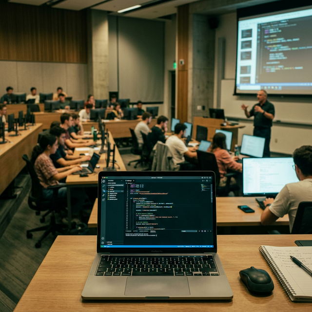
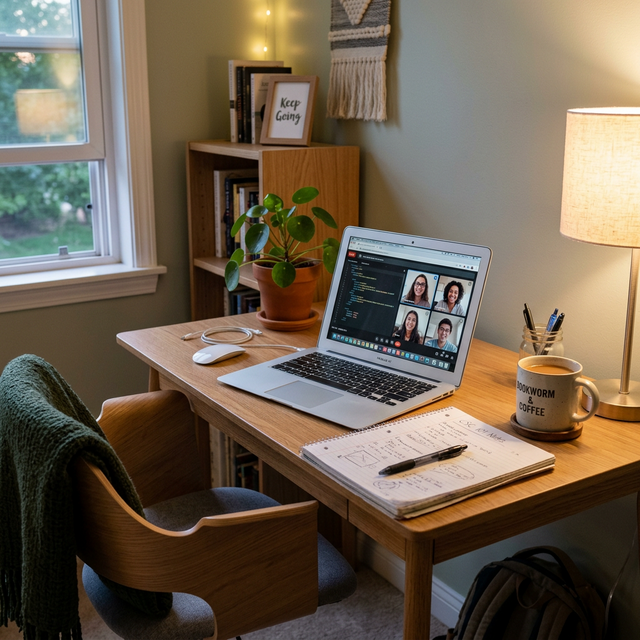
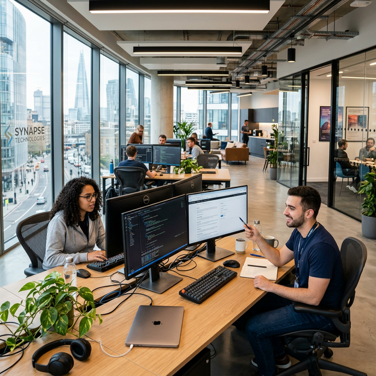

Esiet sveicināti "WeekIvo"! Šeit es dokumentēšu tipisku savu darba nedēļu satilpinot gan klātienes lekcijas Latvijas Universitātē, gan attālinātos darbus, praksi ofisā un brīvo laiku.
Diena sākas agri, dodoties uz Latvijas Universitātes Akadēmisko centru. Klātienē apgūstam tādus priekšmetus kā Datu bāzes un Programmatūras inženierija.


Ne visas dienas jābrauc uz fakultāti. Pāris dienas nedēļā noris intensīvs darbs tiešsaistē, risinot mājasdarbus un strādājot pie grupu projektiem.
Lai teoriju pārvērstu prasmēs, liela daļa nedēļas tiek aizvadīta kā "Junior Developer" uzņēmumā. Šī ir iespēja ieraudzīt, kā koda rindiņas "atdzīvojas" īstos produktos.

Svarīga prakses daļa ir programmatūras Bugu (kļūdu) labošana. Palīdzi komandai - klikšķini uz sarkanajiem kukaiņiem pirms tie izbēg!
Dalība LU SP un fakultātes domnieku sapulcēs. Lieliska iespēja attīstīt līderības un komunikācijas prasmes ārpus lekcijām.
Kad monitors tiek izslēgts, datoriķi satiekas pie galda un izaicina viens otru taktiskās un aizraujošās kāršu vai dēļu spēlēs piektdienu vakaros.
Nedēļas nogales izaicinājumi. Ideju ģenerēšana, negulētas naktis un prototipu izstrāde kopā ar līdzīgi domājošiem entuziastiem.